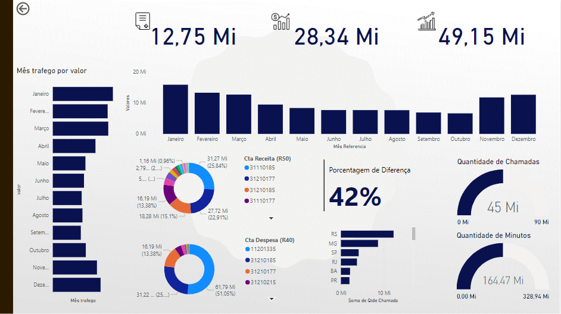

Sobre Mim
Com uma sólida formação em Tecnologia da Informação e especialização em Big Data/Data Science, tenho mais de 5 anos de experiência no setor de TI, evoluindo constantemente minha carreira e habilidades. Atualmente, estou como Analista de Sistemas Pleno na Cleartech, com um foco crescente em análise de dados, preparando-me para uma transição completa para a área de dados. Minha jornada começou como estagiário em TI, progredindo para Analista de Operações Júnior, e agora atuo como Analista de Sistemas Pleno, com um forte interesse e capacitação em Análise de dados e Data Science, evidenciado pelas certificações da Google em Data Analytics e da IBM em Data Science. Estou sempre buscando novos desafios e oportunidades para aplicar minha paixão por transformar dados complexos em insights acionáveis que impulsionam decisões estratégicas.
Projetos
Dashboard de Ajuste Trimestral
Em resumo, este projeto de ciência de dados e análise de dados é um exemplo robusto de como a coleta, preparação e análise de dados podem ser utilizadas para criar soluções personalizadas que atendam às necessidades específicas de um cliente. Através do uso de tecnologias avançadas e uma compreensão profunda das questões enfrentadas pelo cliente, foi possível desenvolver um dashboard interativo que não só apresenta informações valiosas de forma acessível, mas também capacita o cliente a utilizar esses dados de maneira eficaz para tomar decisões informadas.
Contato
Entre em contato comigo através dos seguintes meios: